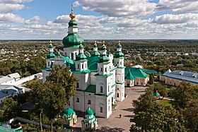

ЧЕРНІГІВ
Одне з найдавніших міст України, засноване в кінці VII століття при впаданні річки Стрижень у Десну. Упродовж своєї історії часів Середньовіччя й Відродження місто було одним із головних осередків політико-економічного й соціально-культурного життя українців. Місто славиться своїми пам'ятками часів Русі й Чернігівського князівства, а також Гетьманщини й козацького Чернігівського полку.
Чисельність населення станом на 1 січня 2022 року становить 282 747 осіб.
6 березня 2022 року указом Президента України з метою відзначення подвигу, масового героїзму та стійкості громадян, виявлених у захисті своїх міст під час відсічі збройній агресії Російської Федерації проти України, місту присвоєно почесну відзнаку «Місто-герой України»[2].
Географія
Чернігів знаходиться в західній частині Чернігівської області. Розташоване у Придніпровській низовині, на правому березі річки Десни.

Адміністративний устрій міста
Чернігів поділяється на 2 райони: Деснянський та Новозаводський. Райони ділять місто навпіл (межа проходить по проспекту Миру): Деснянський — східна частина, Новозаводський — західна частина міста. У місті налічується орієнтовно 550 проспектів, вулиць, бульварів, площ, провулків, скверів та узвозів. А саме: близько 400 вулиць, 100 провулків, 2 проспекти. Вулиці, провулки можна умовно поділити, бо місто поділене на 2 райони.
Детальніше побачити перелік вулиць, провулків, площ і т. д. можна побачити тут.
Клімат
Місто знаходиться в зоні, яка характеризується континентальним кліматом. Найтепліший місяць — липень із середньою температурою 18,9 °C (66 °F). Найхолодніший місяць — січень, з середньою температурою −5,6 °С (22 °F)
Назва
За переказами і легендами, Чернігів отримав назву на честь першого місцевого князя — Чорного. На сьогодні відомо багато різних легенд і переказів пов'язаних із назвою міста. За одними з них, назва міста пов'язується із ім'ям дочки цього ж князя «Чорного», яка викинулася з вікна княжого терему, щоб уникнути наруги з боку ворогів, які стояли облогою навколо міста. Інші легенди кажуть, що Чернігів завдячує своєю назвою темним, дрімучим, «чорним», лісам, які з усіх боків оточували місто[4]. Також існує версія про велику кількість «серн», тобто сарн, які населяли околиці цієї місцевості. І ніби, з часом, назва міста змінилася з Сернігів на Чернігів.
Символіка
Герб Чернігова затверджений 1 грудня 1992 року Чернігівською міською радою. Він складається зі срібного щита, на якому розташований чорний коронований орел із золотим дзьобом і лапами. Орел тримає лівою лапою по діагоналі золотий хрест. Базою для герба став герб Чернігова і всієї Чернігівщини XVIII—XIX століть.
Прапор Чернігова затверджений 26 червня 2008 року Чернігівською міськрадою. Прапор являє собою прямокутне біле полотнище співвідношенням 2 до 3, у центрі якого розташований чорний одноголовий коронований орел, який лівою лапою тримає золотий хрест. Автор прапора — заслужений діяч мистецтва України — Борис Дєдов. За задумами художника, прапор відображає історичні епохи розвитку міста від козацьких часів і містить основний елемент герба Чернігова. Прапор використовується на всіх офіційних міських заходах.
Населення
Згідно з опитуваннями, проведеними Соціологічною групою «Рейтинг» у 2017 році, українці становили 91% населення
міста, росіяни — 7%.
Національний склад населення Чернігова (2001):
- українці — 86,3 %
- росіяни — 10,6 %
- білоруси — 1,15 %